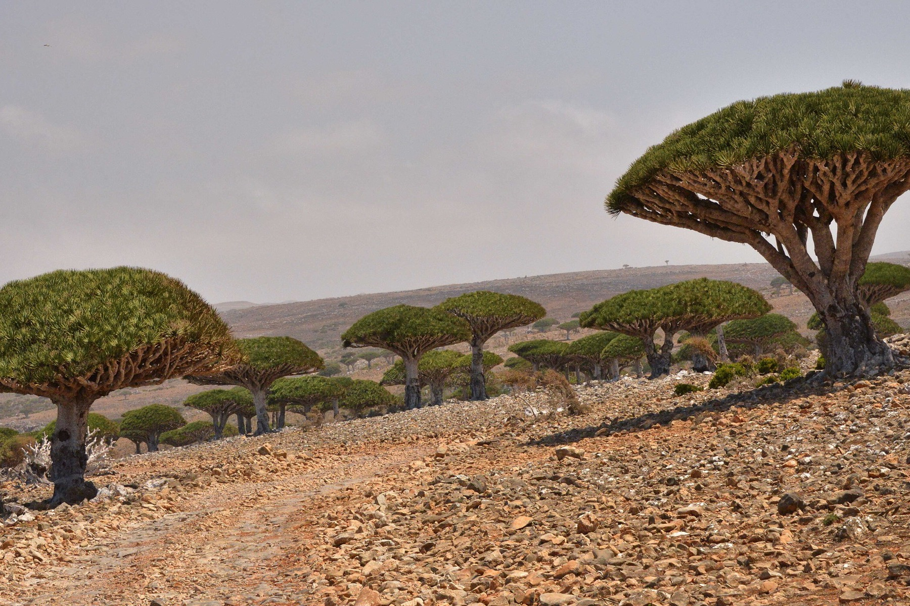
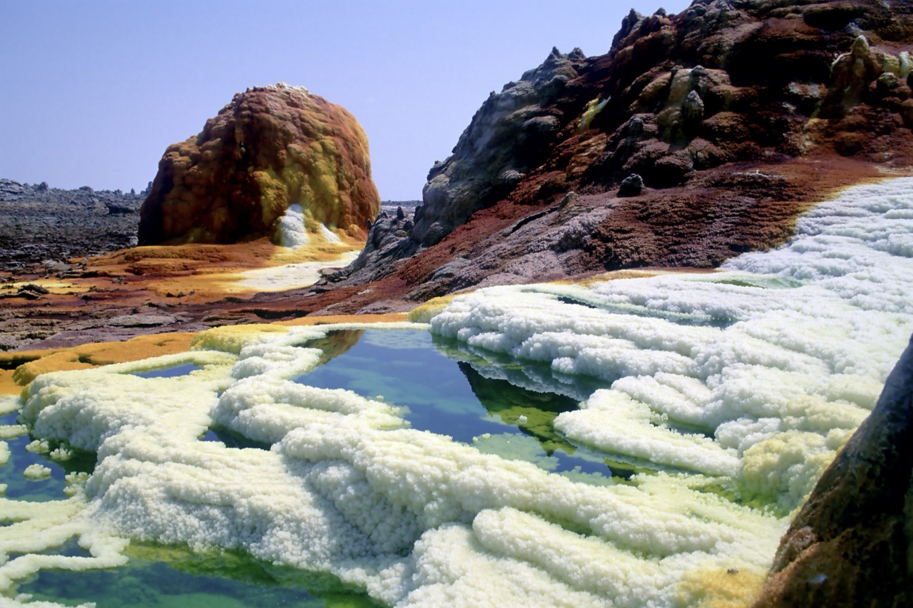
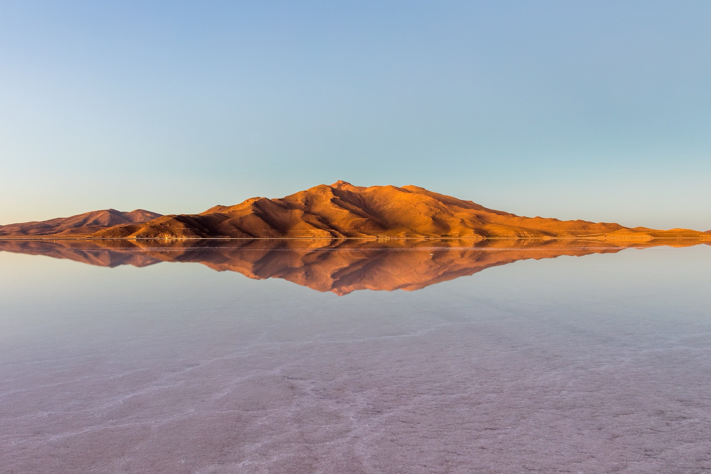
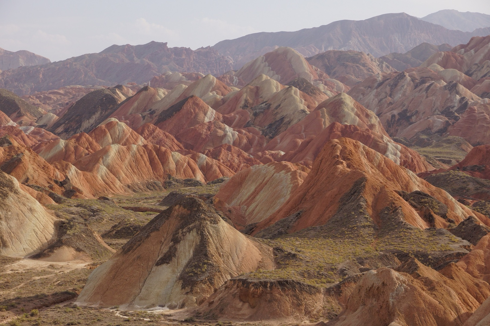
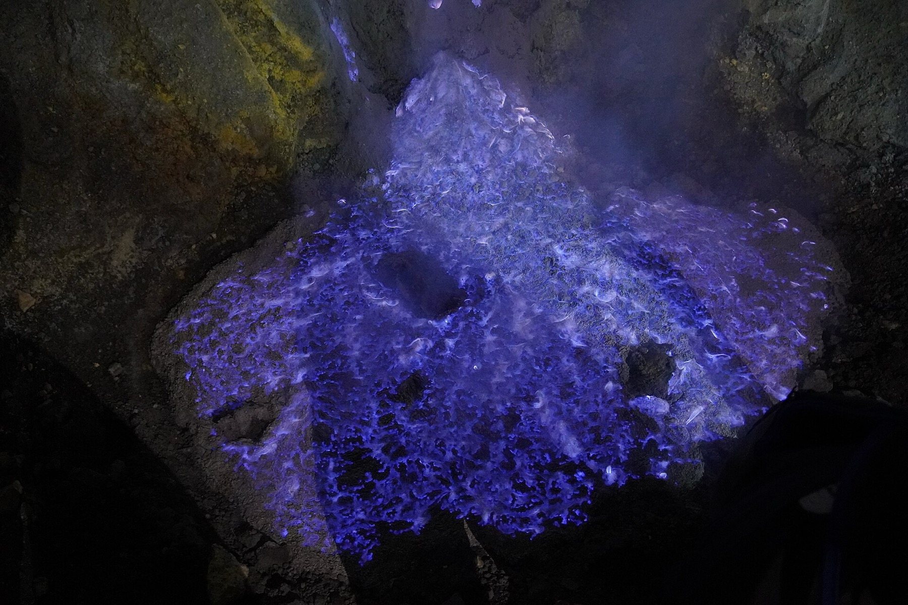
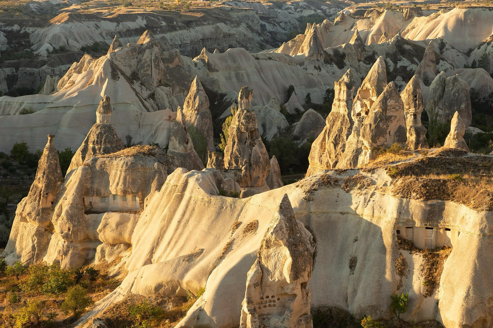
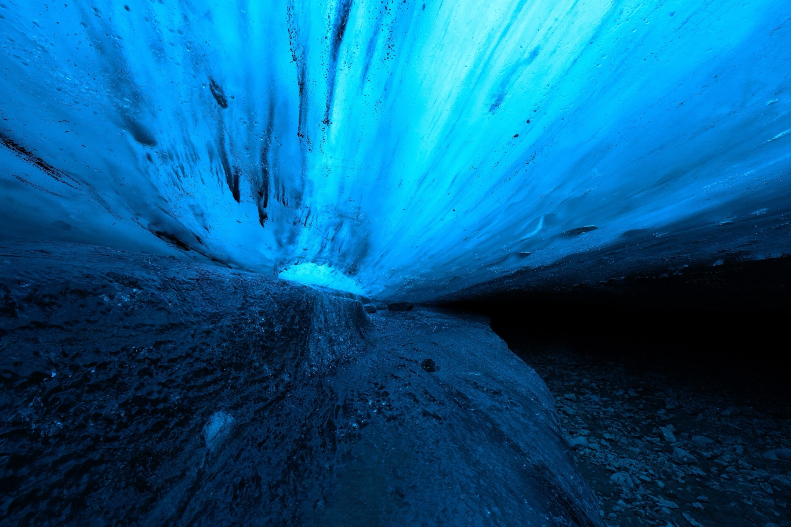
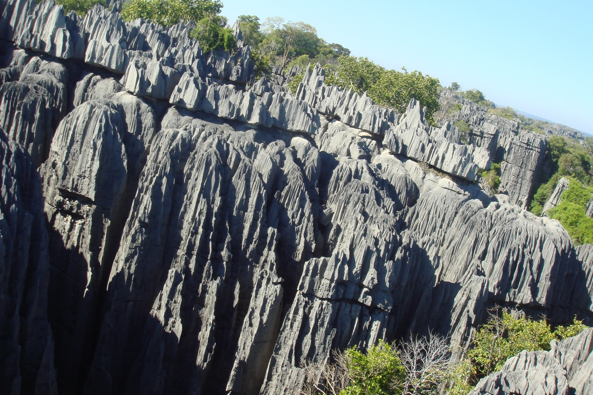
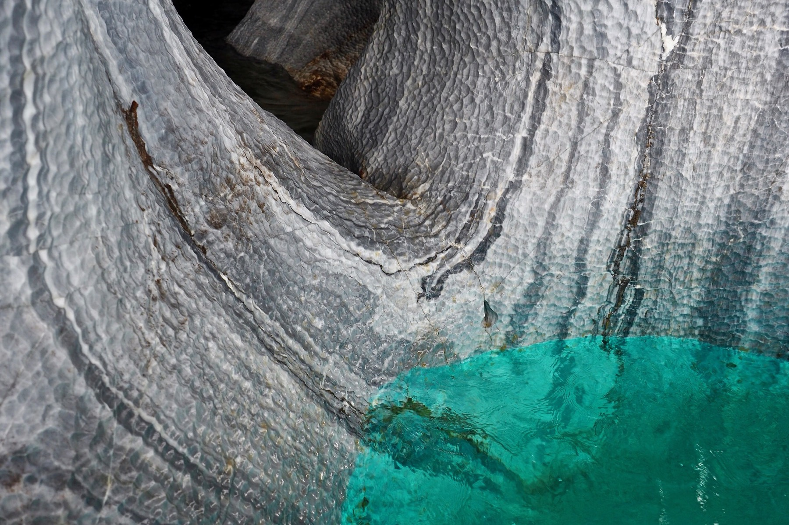
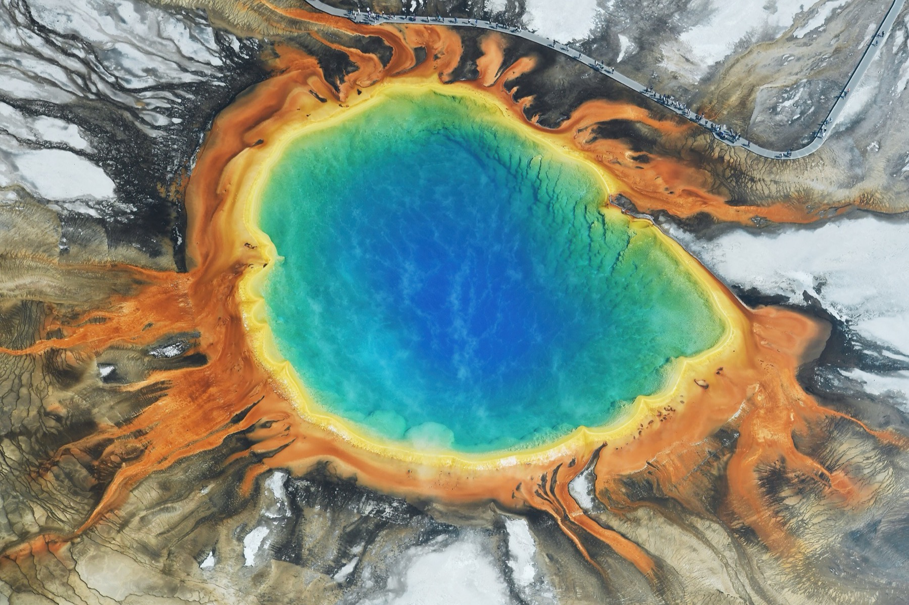

Какая это планета?
Сразу к ответуСокотра
Йемен · старт маршрута
Остров оторвался от материка так давно, что жизнь здесь пошла отдельной веткой. Драконовы деревья держат крону плоским зонтом: так они ловят туман, а дождя тут почти не бывает. На срезе кора истекает красной смолой — её тысячи лет называют кровью дракона.
307 из 825 видов растений не растут больше нигде

Данакиль
Эфиопия · этап 1 494 км
Под впадиной стоит магма и выдавливает наверх рассолы, насыщенные железом и серой. Цвет здесь означает химию: жёлтый — сера, оранжевый — окисленное железо, зелёный — медь. Дождя не бывает, и рисунок держится годами, пока его не перепишет новый источник.
кислотность рассолов доходит до pH −1,7

Уюни
Боливия · этап 12 371 км
Соляная корка легла так ровно, что по ней калибруют спутниковые высотомеры. В дождь на ней стоит слой воды в пару сантиметров, и равнина становится зеркалом без единого шва. Горизонт пропадает: небо оказывается и сверху, и снизу, а гора вырастает из собственного отражения.
на 10 000 км² перепад высот меньше метра

Данься
Китай · этап 17 613 км
Песчаник и минералы копились слоями на дне древнего озера, а потом плиты подняли эту стопку и наклонили набок. Ветер и вода срезали верх, и разрез вышел наружу: полосы ржавчины, охры и мела идут поперёк склонов. Красит их не свет и не лишайник — это цвет самой породы.
пласты копились около 24 млн лет

Иджен
Индонезия · этап 5 422 км
Из трещин кратера бьёт вулканический газ температурой под 600 °C. На воздухе он загорается и горит синим, потому что горит сера, а не дерево. Днём пламени не видно совсем — оно проступает только в темноте, и сборщики серы работают прямо в нём.
озеро в кратере — pH 0,5, кислее желудочного сока

Каппадокия
Турция · этап 9 659 км
Вулканы засыпали долину пеплом, пепел слежался в туф — камень, который режется ножом. Дождь и ветер выели мягкое и оставили стоять твёрдое: сотни башен с каменными шапками. Тот же податливый туф позволил выкопать город прямо под ними — Деринкую уходит на восемь ярусов вниз.
под ними город Деринкую уходит на 85 м вниз

Ватнайёкюдль
Исландия · этап 4 383 км
Лёд лежит слоями почти километровой толщины и под собственным весом выдавливает из себя воздух. Без пузырьков он перестаёт рассеивать свет и пропускает только синюю часть спектра — остальное гаснет в толще. Пещеру каждую зиму протапливает талая вода, и каждое лето своды обрушиваются: одну и ту же не увидеть дважды.
толщина льда доходит до 950 м

Цинги
Мадагаскар · этап 10 611 км
Дожди тысячелетиями растворяли известняк сверху вниз, вдоль трещин. Осталось то, к чему вода не добралась: частокол лезвий высотой до ста метров, между которыми не пройти. По-малагасийски «цинги» и значит место, где нельзя ходить босиком.
иглы поднимаются на 100 м

Мраморные пещеры
Чили · этап 10 426 км
Волны ледникового озера шесть тысяч лет вылизывают мраморный мыс и вымыли в нём своды и колонны. Вода бирюзовая не от неба: ледники стирают с гор каменную муку, и эта взвесь рассеивает свет. Отражённый от воды, он поднимается на потолок, и слои мрамора начинают светиться изнутри.
вода точит этот мрамор больше 6 000 лет

Гранд-Призматик
США · этап 10 807 км
В середине источника вода около 70 °C и почти стерильна — она синяя просто потому, что глубокая и чистая. К краям температура падает, и на каждом поясе селится своя колония бактерий: сначала жёлтые, за ними оранжевые, потом рыжие. Кольца — это не минерал, а живое, разложенное по градусам.
цвет источнику дают живые бактерии при 70 °C